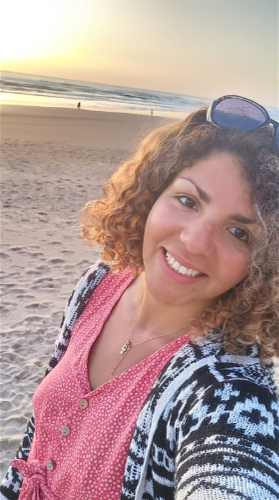
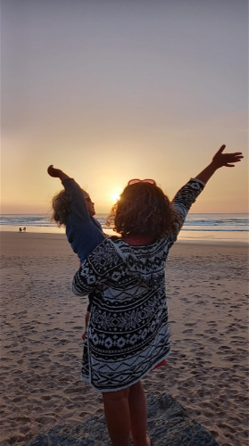

Je m’appelle Sara, j’ai 26 ans et je vis actuellement en Algarve
dans le Sud du Portugal. Je suis mariée avec Benoit, mon grand amour
depuis déjà 10 ans et l’heureuse maman d’un petit garçon, Noah qui
est né en 2020. Depuis toute jeune, le monde de la maternité et du
prendre soin m’attire. Comme quelque chose qui ne s’explique pas
mais, qui te parle au plus profond de toi. J’ai toujours su qu’un
jour je serai maman et très jeune je rêvais déjà du jour où j’aurais
enfin ce ventre arrondi que je trouve si beau.
Après mon BAC j’intègre d’abord une première année de médecine, mais
rapidement je me rends compte que ce n’est pas fait pour moi. Je
passe donc un concours pour entrer en école d’infirmière, en
espérant à terme pouvoir travailler dans un service de maternité ou
de suite de couche. Durant mes études j’ai eu la chance de
travailler dans un service de gynécologie obstétrique, secteur
naissance. C’est à ce moment-là que mon expérience dans le monde de
la maternité a réellement commencé.
J’ai découvert de mes yeux ce qu’était un accouchement à l’hôpital,
les protocoles suivis par les équipes et ce que cela pouvait
engendrer sur les mères, les pères et les bébés. Tout n’est pas à
jeter à la poubelle bien sûr, mais un grand nombre de pratiques
m’ont questionnée. J’ai aussi été marquée par le nombre de futures
mamans qui remettaient entièrement leur corps entre les mains de
l’équipe médicale par manque d’informations …
C’est ainsi que j’ai commencé à me renseigner sur la physiologie de
la grossesse et de l’accouchement.


Deux ans après avoir obtenu mon diplôme, notre fils Noah, fait son
apparition dans notre vie. Je ne pourrai jamais assez le remercier
pour tout ce qu’il a fait naître en nous et pour le courage et la
foi qu’il nous a apporté. J’ai vécu un accouchement physiologique, à
l’hôpital en salle nature. C’était un très bel accouchement, bien
qu’avec le recul je me suis rendue compte que les protocoles
hospitaliers ont légèrement entravé la physiologie de cette
naissance.
Après la naissance de mon fils, j’ai d’abord fait le choix de ne pas
reprendre mon travail d’infirmière pour m’occuper pleinement de lui.
Et naturellement, j’ai vu resurgir mon envie d’accompagner les
femmes, les mères dans ce merveilleux chemin, mais aussi ce chemin
parfois semé d’embuches, qu’est la maternité. C’est ainsi que j’ai
suivi la formation complète de doula, coach périnatal ainsi qu’une
spécialisation dans le suivi des grossesses à risques avec l’école
internationale CYBELE.
Pour offrir un cadre de vie magnifique et plein de liberté à notre
fils, mais aussi à nous même, nous avons fait le choix de quitter la
région Grenobloise pour nous installer au Portugal en 2023. Ainsi
aujourd’hui, j’offre mes services à toutes les femmes francophones
vivant sur place (car pour l’instant mon niveau d’anglais et de
portugais ne me semblent pas suffisants). Mais je propose aussi et
surtout des services en ligne qui me permettent de vous accompagner
où que vous soyez dans le monde ! Lors de mes retours en France,
vous pourrez également me retrouver en présentiel, autour de
Grenoble pour assister à des ateliers à thème, et je l’espère très
bientôt, pour participer à des retraites sur plusieurs jours ! Pour
suivre mon actualité, n’hésitez pas à jeter un œil à ma page
Facebook, Instagram ou à me contacter par mail !